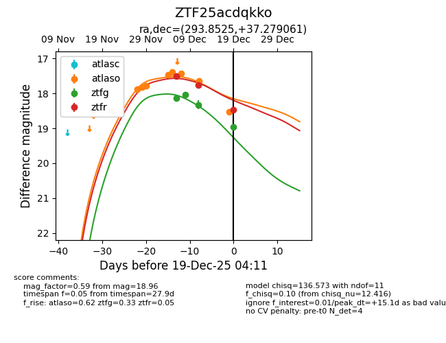
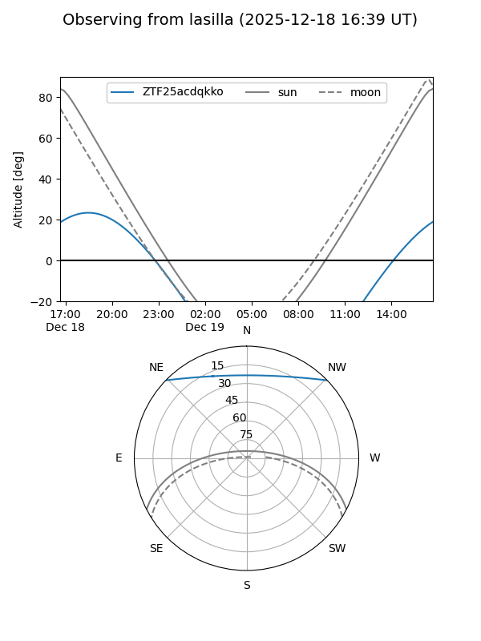
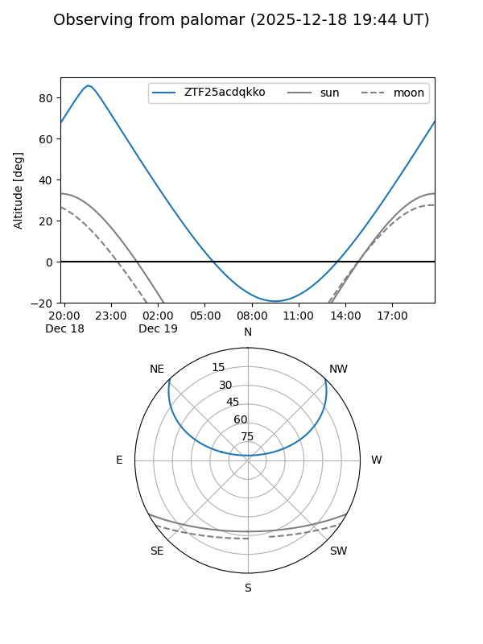
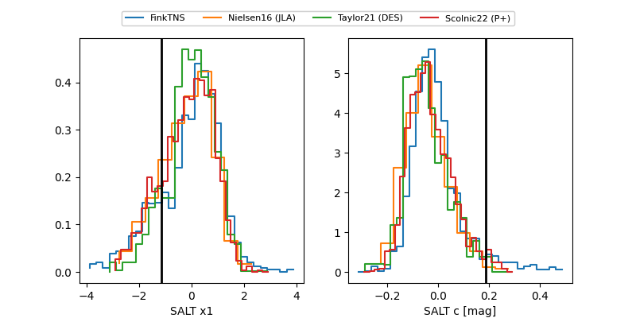

ZTF25acdqkko
Target ZTF25acdqkko at 2025-12-19 04:12
Aliases and brokers:
FINK: fink-portal.org/ZTF25acdqkko
Lasair: lasair-ztf.lsst.ac.uk/objects/ZTF25acdqkko
ALeRCE: alerce.online/object/ZTF25acdqkko
alt names
ZTF25acdqkko (ztf,fink_ztf)
Coordinates:
equatorial (ra, dec) = 293.8525,+37.27906
equatorial (HMS+DMS) = 19:35:24.60,+37:16:44.62
galactic (l, b) = (70.8404,+8.11440)
Flags:
Photometry:
last atlaso=18.53, ztfg=18.96, ztfr=18.46
9 atlaso, 4 ztfg, 3 ztfr detections
Lightcurve

Visibility


Additional plots
